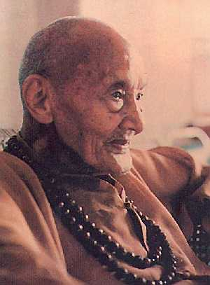

广钦老和尚法身示现奇迹
冯冯
一九八六年（丙寅年）二月十一日（正月初三）晚上，正当做晚课完毕，静坐之际，我忽然看见金光缭绕，出现了一位菩萨，法相庄严，全身放射金光，头上金光光轮巨大，但他全身毫无装饰，十分朴素，胸前挂着菩提大念珠，他慈祥温和地望着我微笑，我却不认识他是谁。
我慌忙下拜，叩问：“请恕弟子眼拙愚昧，您是哪位菩萨莅临？”
他微微笑，没有立刻回答，我细看他的法相，我发现他是一位很瘦的老人，大约有九十多或一百岁，不过面貌不似那么老，好像只有六七十岁，非常清秀，鼻子相当高而长，山根几乎是完全不下陷的，倒有些像是希腊人的鼻型，下巴是很长的，而且有些向外翘，两眼炯炯有神，闪射着高度智慧光芒，耳朵很长很大，头上是剃光的，眼肚下的泡泡很大而有些下垂，人中很深，眉毛很不少，有几根特别长，白白的，他一身带着水果的香气，有些像是桔子花的香味。
这是谁呢？法相那么庄严，那么祥和，分明是一位菩萨，而又具有罗汉相。这是谁？令我一见而心生恭敬而且喜悦不已。
我从来未见过这位菩萨，也猜不出他是谁？我知道他不是我的幻觉，他在我面前，十分真确。我知我不是做梦，因为外面的远处火车和汽车奔驰之声，我仍听见，后园树上的知更鸟阵阵夜啼，也历历可闻。
我大惑不解，再次叩问菩萨法号。
他微微笑，嘴唇微动：“我是广钦！”
他说的是台语，不是国语，我是听得懂闽南语的，也能讲一点。去国廿余载，少年时代在台湾会讲流利的台语，早已忘了八九成，不过基本的台语还是懂的，可是要费力一点才可听得明白人家说什么。而这一次，这位老和尚一开口，我就听懂了，虽然他的口音好像又跟台湾人有不同。
“啊！您是广钦老法师！”我失声叫了起来，我又惊又喜，我欢喜无限地下拜：“老法师您怎么来的？”
“说来就来啦！”他微笑：“你不是希望有一天见到我吗？我现在就来成就你的心愿喽！”
“啊！是的！是的！老法师！”我欢喜得无法形容！“倾仰已久，无缘识荆，今晚得见，太欢喜了，弟子太欢喜了！”
“你是个好孩子，”他说：“你要多多护法啊！你做得没有错，不要怕毁谤！”
“老法师！”我叫道：“你成菩萨了！太好了！”
“人人都可以成菩萨！”他微笑：“这也没有什么，都不过是来来去去而已，就是一个愿字。”
“那么您现在去了？”我不免有些不舍难过。
“去去又再来！”他说：“去去就来！”
“那么，老法师有什么法谕指示么？”
“没有！”他摇头微笑：“没有！”
“请老法师多多开示吧！”
“没有！”笑着，身体渐渐溶化，金光渐渐散去：“本来就是没有！”
在他消失的最后一刹那，金光陡然尽敛，陡现出数千粒的舍利子，七彩光芒照射，晶莹庄严至极，旋即光华又都消失了。
我眼前仍是黑暗的静室，窗外天空出现鱼肚白，知更鸟啼声已残。
我知那不是梦境，绝对不是。
我提前起床做早课，母亲在邻室也起床了，我知道他在念经。
那天我告诉母亲说：“台湾的九十五岁老法师广钦和尚来过了，似乎他已入灭或将入灭，他好像要我传递什么，大概是叫我告诉世人那句话‘本来就是没有！’或者是叫我看见他身上有数千粒舍利子闪光！”
新年头，很多佛教友人来舍下欢叙，每天络绎不绝，我都把我定中所见告诉他们，大家都惊异，都说：“广钦老和尚一定是入灭了！”
宾客中有一位是虔诚的佛教徒L太太，她是印尼华侨，曾经有幸皈依广钦和尚。年前，她来舍下见我，说她回国参拜各处名山佛寺，她问我有什么特别要她做的事。
“你是广钦老和尚的弟子，”我当时说：“你就到台湾去，多多亲近他老人家吧！他老人家就快入灭了，将来你再去台湾，可能见不到他了。”
在座众人就都惊问：“培德居士，你预见广老入灭？什么时候？”
“广老已经九十四岁了！”我说：“谁不能预料他随时都会入灭呢？我也只是随便推测而已，不敢自称是预见。”
大家都同意我的观点，不过，也有人说：“虚云老和尚一百二十多岁才入灭，也许广老也会到一百多岁吧！”
“但愿如此吧！”我说：“不过，我感觉到广老好像世缘将尽，我推测在一九八六年上半年，或者是春天，就会发生。”
大家都说：“希望你这一次看不准确！”
L太太回国拜佛，果然依我言，去拜广老。而且，她福缘殊胜，竟得与众弟子随侍广老十天之久。她回加以后，就来见我，初四这天，她也在座。
她说：“师父精神很好，他非常慈悲，你说他会入灭，恐怕你说错了。”
“我也没有把握说我看得准不准。”我说：“我但愿我看得不准也罢！我但愿广老也像虚老那样，活到一百多岁教导我们；不过，我昨夜所见，恐怕是不太吉祥之兆，也许这时候，广老他老人家已经......哎呀......”我惊叫了起来：“他入灭了！他入灭了！”
“什么？”大家都惊叫做一团！“什么？”
“大概是三四小时之前，他入灭了！”我说：“你们大家记下这时间，现在是一九八六年三月十二日，农历是正月初四，上午十一时十五分，台湾现在应该是初五下午三点多、四点多钟，我看见广老入灭了，他的全身都是舍利子闪闪发光！”
在座的人都渐渐肃静了下来，有些人低声饮泣。
“你一定看错了！”有人说：“培德，你一定看错了！”
“但愿我是看错！”我心中难过。
“等一两天看看吧！”有人说：“或者我们打长途电话到高雄去问。”
“那不太好！”有人说：“打电话去问老和尚是不是死了，这不好！”
“那么就等几天，看台湾有没有消息来吧！”大家这样决定，我立刻打电话将奇象告诉罗午堂伯伯和冯公夏伯父，两位老伯也劝我等待消息。
初六晚上，下午七时，电话铃响了，台北的总机小姐声音：“找冯冯先生听电话。”
“我是！”我紧张了起来：“我知道，是天华公司李云鹏先生打来的，请接通电话。”
我一开口就叫：“李先生！”
果不然是李云鹏先生，他在台北那边说：“我是李云鹏。”
“你知道广钦老和尚......”李先生提出了广老，一句没说完，我就知道是证实了。
“我已经知道了！”我抢着说：“广老已于昨天入灭了！他老人家入灭前，法身分出神力来过示现，全身金光，舍利放光......”
“广老昨天初五下午两点多钟入灭了！”李先生说：“我现在要问你，他有没有舍利子？”
“广老有很多舍利子！好几千粒七彩的、放光的，”我回答：“好多好多！不过，要叫他们小心处理──荼毗火化！”
“那我就放下心了！”李先生说：“得你这几句话，我就安心了，我会通知他们。”
“李先生您别为广老伤心，”我说：“他已经进入永恒了，他在宇宙更高的境界中，他已经成佛了。”
“我应该为他欢喜才对！”李先生说。
我们都应该为他欢喜才对！广老已经成了佛菩萨！为什么我们不欢喜，反而要悲悼流泪呢？我们这个物质的身体，是终归要物化的；但是，像广老这样，超凡入圣，已经进入了涅槃，得证真如，与宇宙中万能诸佛并在永存。而且，他还会乘愿再来济度世人，我们应该欢喜才是啊！
我从未见过广老，根本连照片也未见过。这一次在定中见到他，是唯一的一次，我叙述他的形貌，在座的他的弟子们或再传弟子都说我讲的就是广老，听这么一说，大家都化悲为喜，念佛没停。
广老既与我素昧平生，我又没有福缘做他的弟子，他为什么会向我示现呢？似乎是不很合理的事，或者，是因为他悲愿宏深，普遍示现，亦不弃我这顽劣的小子吧？我相信，我断不是唯一见到他法身示现的人，必定还有不少人梦见他或在定中见到他的金光法身示现。我相信他老人家的法恩是会像雨露一般普及的。
有人说，我可能是因为常常听人谈及广老，日有所思，夜有所梦，加以我对广老向慕，因此产生幻觉。
幻也罢，真也罢，幻也是真，真亦是幻，这是我的看法。
精神心灵感应，不远万里，幽明无隔，这已经是现代科学所证明了的事实，我认为这一次是广老以幻示真。
听最后消息说：广老火化后，果然有数千粒七彩舍利子！让我们多修行吧！多念佛吧！南无阿弥陀佛！
延伸阅读
广钦老和尚网路专集
http://www.bfnn.org/kuangchin/index.html
原载香港《内明》第171期：1986年06月1日
书名：天眼慧眼法眼的追寻
作者：冯冯
出版：天华出版事业股份有限公司